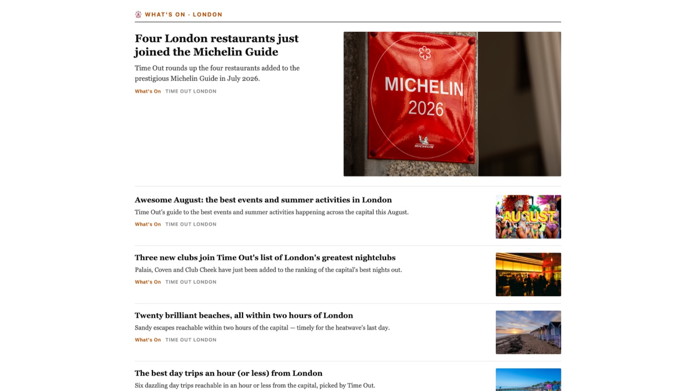
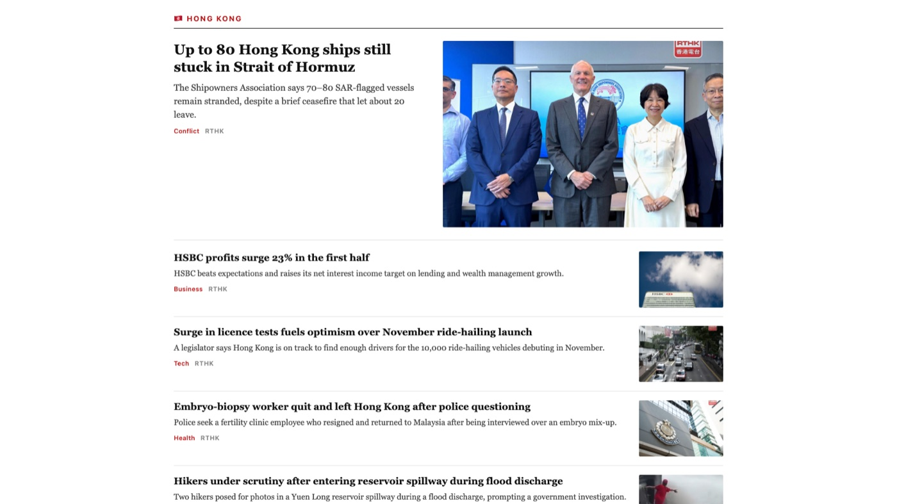

Side project
Daily News Dashboard
Bilingual EN/粵語 newspaper-style briefing covering UK, London, Hong Kong and Global, rebuilt every morning.

Background
A daily news page written for one reader. It weights London first, keeps a Hong Kong section, and presents everything in an NYT-style layout with a Cantonese toggle.
How it works
- Generated, not fetched live — a scheduled job builds the page each morning at 08:00 and writes a dated archive, so opening it is instant and it still works offline.
- Sourced — headlines come from BBC, Guardian, HKFP and RTHK feeds, with a Reddit buzz strip and a What's On London section.
- Refresh on demand — a button re-runs the generation without leaving the page.
Screens


Runs on my machine —
127.0.0.1:8793 resolves there only.